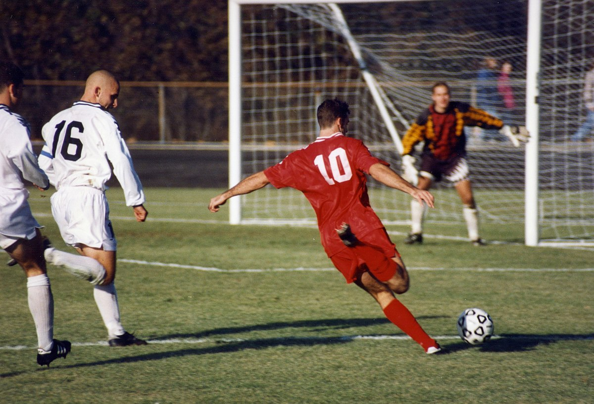

OPINIÓN PERSONAL

- ¿Cuáles son las razones que te hicieron elegir este tema?
Debido a que el futbol siempre me a gustado y como se desarrolla el mismo
- ¿Cuáles son los aportes positivos del tema que elegiste para tu vida?
Permite mantener un buen estado fisico y mental.